轻便的棘轮扳手，可以随身携带用于各种作业。类似于强劲的电钻，你可以像操作螺丝与承孔一样，替换各种尺寸的扳手头。但是，相比电钻需要120伏特的交流电，扳手不是心满意足地躺在口袋里，就是在卖力地干活。Apache CouchDB，就是这样的“扳手”，能屈能伸，轻松应对各种规模与复杂度的问题。
CouchDB是基于JSON与REST的面向文档的数据库，且堪称该类型数据库的经典。CouchDB的第一次发布是在2005年，该版本的设计考虑了Web，可随之而来的却是无数的缺陷、错误、故障与瑕疵。所幸的是，CouchDB最终发展为极其健壮的数据库，为其他大部分数据库所不及。相比其他系统只能容忍偶发的网络中断，CounchDB 甚至能在网络仅偶尔可用时，开足马力正常运作。
与MongoDB有点类似，CouchDB存储由键-值对组成的JSON文档，其中，值可取若干类型中的任意一种，包括嵌套任意深度的其他对象。虽然没有自由定义的查询，但是你依然可以查找想要的文档，主要途径是增量式映射规约（incremental mapreduce）生成的索引视图。
CouchDB无愧于它的口号：放松。相对于只注重大规模集群设施，CouchDB意在支持各种场景的部署，大到数据中心，小至智能手机。你可以在安卓手机或者MacBook上运行 CouchDB，也可以在数据中心中使用。CouchDB由Erlang语言编写，其实现可谓干劲十足——关闭CouchDB的唯一方法是结束其进程。而只支持追加的存储模式，实际上使数据不会损坏，易于复制、备份与恢复。
CouchDB 是面向文档的，使用 JSON 作为其存储与通信的语言。正如 Riak，所有对CouchDB的调用都运行于REST接口之上。复制可以单向也可以双向，可以是自由定义（ad hoc）的也可以是连续的。CouchDB 赋予你足够的灵活性，以决定如何构架、保护与分布你的数据。
CouchDB与MongoDB的比较
本书想回答的一大问题是“CouchDB 与 MongoDB 的差别是什么？”从表面看， CouchDB与MongoDB（第5章讨论过）相当类似。它们都采用面向文档的数据存储方式，对以JSON为数据传输载体的JavaScript十分友好。但是，差别也是明显的，从项目理念、实现到可扩展性的特点，都有所不同。在探索CouchDB简约之美的过程中，我们会详述这些特性。
在为期三天的“行程”中，我们将探索许多CouchDB的亮点与设计选择。一如既往，我们会从单独的CRUD命令开始，然后经由映射规约视图，进而讨论索引。与讲解其他数据库一样，我们会导入一些结构化的数据，以此讨论一些进阶概念。最后，我们会用 Node.js 开发一些简单的事件驱动的客户端应用，并学习 CouchDB 的主-主（master-master，相对于主-从 master-slave）复制策略是如何处理更新冲突的。来，开始吧!
6.2 第1天：CRUD、Futon1与 cURL Redux
注释1 Futon原意为日式床垫，这里为CouchDB中名为Futon的Web接口。——译者注
今天，CouchDB的探索之旅将拉开序幕，起点是CouchDB中称为Futon的Web接口，我们会用它执行基本的CRUD操作。此后，我们会重拾cURL——在第3章中，用它与Riak通信——用于发起 REST 调用。CouchDB 的所有库与驱动程序，其底层实现都归于发送REST请求，因此，先理解其REST的工作方式，是合乎情理的。
CouchDB自带一个名为Futon的实用Web接口。只要安装并运行CouchDB，打开Web浏览器，访问http://localhost:5984/_utils/，就会显示如图6-1所示的Overview页面。
欢迎来到管理员派对
你可能注意到，在Futon页面右栏底部有一条警告消息，告知用户“人人都是管理员”。由于CouchDB的目标是成为产品服务器，因此，读到这条消息后，势必要点击“Fix this”链接，新建一个管理员账号，以限制管理员权限。而在此，我们可不做修改，便于后续的各种操作。
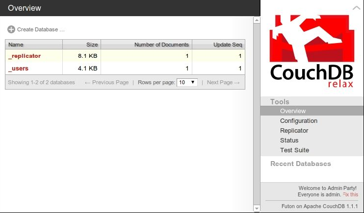
图6-1 CouchDb Futon:Overview Page
在开始操作文档之前，需要创建一个数据库来容纳它们。我们打算新建一个数据库，存储音乐家的信息，包括其专辑与曲目数据。点击Create Database按钮。在弹出框内，输入music并点击Create按钮。然后，这会自动将你转向database的页面。至此，我们就能创建新的或者打开已有的文档了。
在music数据库的页面中，点击New Document按钮。你会看到一个新的页面，类似图6-2。
与MongoDB一样，每个文档含有一个JASON对象，其中又包含称为域（field）的键-值对。CouchDB 中的所有文档都有一个_id 域，它必须是唯一的且不能修改。可以显式地指定_id，即使没有指定，CouchDB也会自动生成一个。在这里，可以用自动生成的_id，所以点击Save Document按钮完成操作即可。
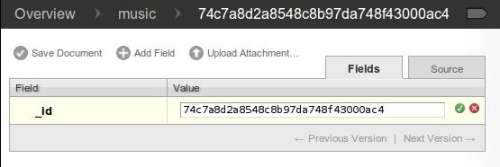
图6-2 CouchDB Futon：新建一个文档
保存该文档之后，CouchDB会立刻给它分配另一个名为_rev的域。这个域会在每次文档变化时，获得新值。这个表示版本的字符串，格式为：整数 +‘-’ +唯一的伪随机数字符串。开头的整数就是版本——在此为1。
以下划线(_)开始的域的名字，对CouchDB有特殊含义，像_id与_rev就尤其重要。想更新或者删除某个已有的文档，必须提供_id 与相应的_rev。如果发现任何失配， CouchDB 都会拒绝该操作。而这，就是CouchDB避免冲突的秘诀——确保只修改最新版本的文档。
CouchDB 没有事务与锁的概念。为了修改已有记录，必须先将它读出，留意其_id与_rev。然后，提供完整的文档（包括_id与_rev），以此请求更新。所有操作都是“先到先得”。CouchDB 通过检查并匹配_rev，可以确保你认为你正在修改的版本，不会在你看不到的地方发生变化。
在已经打开的 document页面中，点击Add Field按钮。在Field栏中，输入 name，在Value 栏输入 The Beatles。点击输入值右侧的绿勾，确保该值没有问题，然后点击 Save Document按钮。我们会看到_rev域的值变成以2开头了。
CouchDB不限于存储字符串，它能处理任何嵌套深度的JSON结构。再次点击Add Field按钮。这次Filed设置为albums，Value域则填入如下内容（这不是完整列表）：
[
"Help!",
"Sgt. Pepper's Lonely Hearts Club Band",
"Abbey Road"
]
点击Save Document按钮后，你会看到图 6-3所示的页面。
除了名字，还有更多关于专辑的信息，可以继续添加一些。修改albums域，用如下的值替换刚输入的那些值：
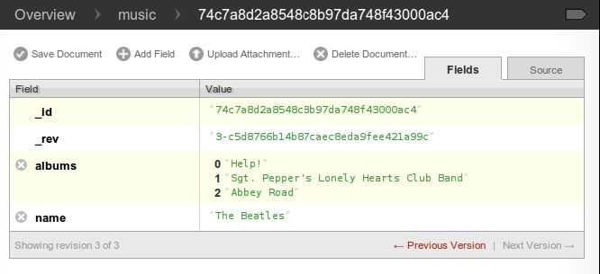
图6-3 CouchDB Futon: document with an array value
[{
"title": "Help!",
"year": 1965
},{
"title": "Sgt. Pepper's Lonely Hearts Club Band",
"year": 1967
},{
"title": "Abbey Road",
"year": 1969
}]
保存文档后，你已经不知不觉扩展了 albums 的值——嵌套文档。页面看起来类似图6-4。
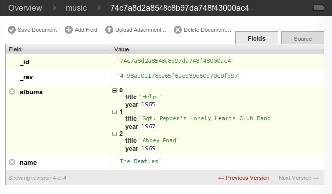
图6-4 CouchDB Futon：包含深度嵌套值的文档
单击Delete Document按钮；正如其名，会将文档从music数据库删除它。但是，先别这么做。回到命令行，看看如何通过REST与CouchDB交互。
与CouchDB的所有通信都是基于REST的，即通过HTTP发送命令。除了CouchDB，我们还讨论过其他通过REST交互的数据库。比如，第3章讨论的，Riak也基于REST实现客户端与数据库的所有交互。与 Riak 一样，可以使用命令行工具 cURL，与 CouchDB通信。
在深入视图（view）话题前，先执行一些基础的CRUD操作。作为开始，打开命令行界面，运行下面的命令：
$ curl http://localhost:5984/
{"couchdb":"Welcome","version":"1.1.1"}
发送GET请求（cURL的默认行为），可以获取URL中指定的信息。而访问根目录只能告诉你CouchDB已经启动，以及目前正在运行的版本。下面不妨查询之前建立的music数据库的信息（为便于阅读，命令输出已格式化）：
$ curl http://localhost:5984/music/
{
"db_name":"music",
"doc_count":1,
"doc_del_count":0,
"update_seq":4,
"purge_seq":0,
"compact_running":false,
"disk_size":16473,
"instance_start_time":"1326845777510067",
"disk_format_version":5,
"committed_update_seq":4
}
该请求返回的信息包括：数据库中存储了多少文档，服务器运行了多久，以及执行操作的数目。
要检索某个特定文档，需要将其_id追加到数据库URL之后，如下所示：
$ curl http://localhost:5984/music/74c7a8d2a8548c8b97da748f43000ac4
{
"_id":"74c7a8d2a8548c8b97da748f43000ac4",
"_rev":"4-93a101178ba65f61ed39e60d70c9fd97",
"name":"The Beatles",
"albums": [
{
"title":"Help!",
"year":1965
},{
"title":"Sgt. Pepper's Lonely Hearts Club Band",
"year":1967
},{
"title":"Abbey Road",
"year":1969
}
]
}
在CouchDB中，发送GET请求总是安全的。CouchDB不会因此对文档做任何修改。而要修改数据库，必须使用其他HTTP命令，如PUT、POST和DELETE。
要新建文档，可以使用 POST 方法，但需确保在 HTTP 头 Content-Type 的值为application/json；否则，CouchDB会拒绝该请求。
$ curl -i -X POST "http://localhost:5984/music/" \
-H "Content-Type: application/json" \
-d '{ "name": "Wings" }'
HTTP/1.1 201 Created
Server: CouchDB/1.1.1 (Erlang OTP/R14B03)
Location: http://localhost:5984/music/74c7a8d2a8548c8b97da748f43000f1b
Date: Wed, 18 Jan 2012 00:37:51 GMT
Content-Type: text/plain;charset=utf-8
Content-Length: 95
Cache-Control: must-revalidate
{
"ok":true,
"id":"74c7a8d2a8548c8b97da748f43000f1b",
"rev":"1-2fe1dd1911153eb9df8460747dfe75a0"
}
由HTTP响应代码“201 Created”，可以知道新建文档请求成功了。而响应体则包含JSON对象，该对象中有诸如_id与_rev值的有用信息。
PUT命令用于更新已经存在的文档，也可以创建带有特定_id的文档。与GET一样， PUT的URL包含数据库URL，且末尾有文档的_id。
$ curl -i -X PUT \
"http://localhost:5984/music/74c7a8d2a8548c8b97da748f43000f1b" \
-H "Content-Type: application/json" \
-d '{
"_id": "74c7a8d2a8548c8b97da748f43000f1b",
"_rev": "1-2fe1dd1911153eb9df8460747dfe75a0",
"name": "Wings",
"albums": ["Wild Life", "Band on the Run", "London Town"]
}'
HTTP/1.1 201 Created
Server: CouchDB/1.1.1 (Erlang OTP/R14B03)
Location: http://localhost:5984/music/74c7a8d2a8548c8b97da748f43000f1b
Etag: "2-17e4ce41cd33d6a38f04a8452d5a860b"
Date: Wed, 18 Jan 2012 00:43:39 GMT
Content-Type: text/plain;charset=utf-8
Content-Length: 95
Cache-Control: must-revalidate
{
"ok":true,
"id":"74c7a8d2a8548c8b97da748f43000f1b",
"rev":"2-17e4ce41cd33d6a38f04a8452d5a860b"
}
在MongoDB中，可以修改文档的某处；而对于CouchDB，任何改动，无论多小，都会导致原本的整个文档被重写。我们之前所见的Futon Web接口，看似独立修改了单个域，但是当点击Save按钮时，其在后台保存了整个文档。
先前提过，_id 与_rev 必须和待更新的文档完全匹配，否则操作就会失败。再次执行相同的PUT操作，可以获得感性认识。
HTTP/1.1 409 Conflict
Server: CouchDB/1.1.1 (Erlang OTP/R14B03)
Date: Wed, 18 Jan 2012 00:44:12 GMT
Content-Type: text/plain;charset=utf-8
Content-Length: 58
Cache-Control: must-revalidate
{"error":"conflict","reason":"Document update conflict."}
你会收到一个“HTTP 409 Conflict”应答，以及描述问题的 JSON对象。这就是CouchDB实现一致性的方式。
最后，用DELETE操作从数据库中移除文档。
$ curl -i -X DELETE \
"http://localhost:5984/music/74c7a8d2a8548c8b97da748f43000f1b" \
-H "If-Match: 2-17e4ce41cd33d6a38f04a8452d5a860b"
HTTP/1.1 200 OK
Server: CouchDB/1.1.1 (Erlang OTP/R14B03)
Etag: "3-42aafb7411c092614ce7c9f4ab79dc8b"
Date: Wed, 18 Jan 2012 00:45:36 GMT
Content-Type: text/plain;charset=utf-8
Content-Length: 95
Cache-Control: must-revalidate
{
"ok":true,
"id":"74c7a8d2a8548c8b97da748f43000f1b",
"rev":"3-42aafb7411c092614ce7c9f4ab79dc8b"
}
尽管被删除的文档即将消失，但DELETE操作还是会产生一个新的版本号。值得一提的是，被删除的文档并非真的从磁盘上移除，取而代之的是一个新的空白文档，将该文档标记为已删除。就像更新一样，CouchDB不就地修改文档。但是，文档还是相当于删除了。
我们已经学了如何用Futon与cURL执行基本的CRUD操作，是时候讨论一些更高级的话题了。在第2天，我们会深入了解如何创建索引视图。它提供了除了指定_id值之外另一种检索文档的方式。
第1天作业
求索
1．获取在线CouchDB HTTP Document API资料。
2．我们已经用了GET、POST、PUT以及DELETE。还有其他支持的HTTP命令吗？
实践
1．用cURL执行PUT命令，新建music数据库的文档，其_id由你指定。
2．用cURL新建数据库，其名字由你指定，然后再用cURL将该数据库删除。
3．用 cURL 新建文档，包含一个文本文档作为附件。最后，编写并执行一个 cURL请求，仅返回该新建文档的附件。
在CouchDB中，通过视图对数据库中的文档一探究竟。总体而言，视图是访问文档的主要方式，但是也不排除某些相对琐碎的场景——比如，我们在第1天看到的那些单独的CRUD操作。今天，我们会探索如何编写一个创建视图的函数。同样，我们也会学习如何通过cURL执行视图的自由定义的查询。最后，我们将导入music数据，以使视图更为“夺目”，并演示如何使用couchrest（一种与CouchDB协同工作的Ruby库）。
视图包含映射与规约函数，它们用于生成有序的键-值对列表。键或者值都可以是任何合法的JSON。最为简单的视图称为_all_docs，它会倾整个数据库而出，每个文档都会有对应的条目，且条目以字符串形式的_id为键值。
要检索数据库中的全部内容，可通过发送GET请求获取_all_docs视图。
$ curl http://localhost:5984/music/_all_docs
{
"total_rows":1,
"offset":0,
"rows":[{
"id":"74c7a8d2a8548c8b97da748f43000ac4",
"key":"74c7a8d2a8548c8b97da748f43000ac4",
"value":{
"rev":"4-93a101178ba65f61ed39e60d70c9fd97"
}
}]
}
你可以在如上所示的输出中，看到目前为止所创建的文档。得到的响应其实是一个JSON对象，包含以若干行为元素的数组（即rows数组）。而每行正是包含三个域的对象。
●id是文档的_id。
●key是映射规约函数生成的JSON键。
●value是对应的JSON值，也是通过映射规约生成的。
在_all_docs中，id和key的域是一致的，但是对于自定义的视图，两者几乎从不相同。
视图的默认行为是，不会在返回值中包含每个文档的全部内容。若想检索文档的全部域，就得增加URL参数include_docs=true。
$ curl http://localhost:5984/music/_all_docs?include_docs=true
{
"total_rows":1,
"offset":0,
"rows":[{
"id":"74c7a8d2a8548c8b97da748f43000ac4",
"key":"74c7a8d2a8548c8b97da748f43000ac4",
"value":{
"rev":"4-93a101178ba65f61ed39e60d70c9fd97"
},
"doc":{
"_id":"74c7a8d2a8548c8b97da748f43000ac4",
"_rev":"4-93a101178ba65f61ed39e60d70c9fd97",
"name":"The Beatles",
"albums":[{
"title":"Help!",
"year":1965
},{
"title":"Sgt. Pepper's Lonely Hearts Club Band",
"year":1967
},{
"title":"Abbey Road",
"year":1969
}]
}
}]
}
于是，你能在输出的对象中看到属性name与albums。对视图的基本结构有了概念，我们着手建立自己的视图。
既然我们对视图有了粗略的了解，不妨尝试创建我们自己的视图。作为开始，我们会复制_all_docs view 的行为，然后，我们会更进一步，创建复杂的视图，从我们的文档提取更深层的信息并做索引。
如何生成临时视图呢？就像我们在第1天所做的操作，打开浏览器，指向Futon1。然后，点击链接，打开music数据库。在music数据库的页面中，从右上角的View下拉菜单中，选择“Temporary view...”。你应该就能看到类似图 6-5的页面。
注释1 http://localhost:5984/_utils/
左侧的Map Function输入框中的代码看起来如下：
function(doc) {
emit(null, doc);
}
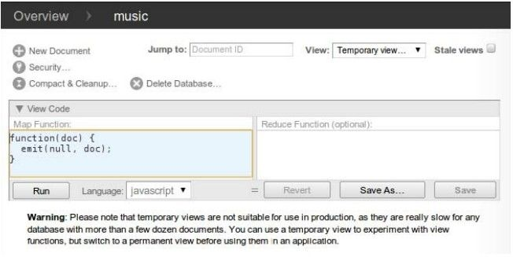
图6-5 CouchDB Futon：临时视图
若点击Map Function下的Run按钮，CouchDB会为数据库中的每个文档执行一次这个函数，每次都会将当前文档作为参数doc传入。这个过程会生成一个单行的表，如下所示：
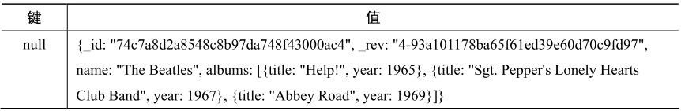
这个输出或者所有视图的秘密就在于名为 emit()的函数（它与 MongoDB 中的同名函数起相同的作用）。emit函数有两个参数：key和value。一个给定的映射（map）函数可以对某个特定的文档调用emit函数一次、多次或者根本不调用。在前面的实例中，映射函数就发布了键-值对null/doc。正如我们在输出表里看到的，键的确是null，而值则与第1天直接用cURL请求所获得的对象是同一个。
要编写一个与_all_docs 作用相同的映射器，需要适当修改 emit 函数。记得吗？_all_docs发布文档的_id域作为key，仅包含_rev域的简单对象作为value。明确了这一点，修改Map函数的代码为以下代码，然后单击Run按钮。
function(doc) {
emit(doc._id, { rev: doc._rev });
}
现在，输出应该类似于下面这张表，与我们先前通过_all_docs 枚举记录时，所看到的键-值对一样：
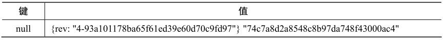
注意，未必要用Futon生成临时视图。可以向_temp_view处理程序发送POST请求。在这个实例中，把修改过的map函数作为JSON对象，放到请求体中即可。
$ curl -X POST \
http://localhost:5984/music/_temp_view \
-H "Content-Type: application/json" \
-d '{"map":"function(doc){emit(doc._id,{rev:doc._rev});}"}'
{
"total_rows":1,
"offset":0,
"rows":[{
"id":"74c7a8d2a8548c8b97da748f43000ac4",
"key":"74c7a8d2a8548c8b97da748f43000ac4",
"value":{
"rev":"4-93a101178ba65f61ed39e60d70c9fd97"
}
}]
}
于是，取得的响应与从_all_docs 获得的完全一样。但是，如果增加参数include_docs=true，又会怎样呢？我们一起试试看。
$ curl -X POST \
http://localhost:5984/music/_temp_view?include_docs=true \
-H "Content-Type: application/json" \
-d '{"map":"function(doc){emit(doc._id,{rev:doc._rev});}"}'
{
"total_rows":1,
"offset":0,
"rows":[{
"id":"74c7a8d2a8548c8b97da748f43000ac4",
"key":"74c7a8d2a8548c8b97da748f43000ac4",
"value":{
"rev":"4-93a101178ba65f61ed39e60d70c9fd97"
},
"doc":{
"_id":"74c7a8d2a8548c8b97da748f43000ac4",
"_rev":"4-93a101178ba65f61ed39e60d70c9fd97",
"name":"The Beatles",
"albums":[...]
}
}]
}
这次，其他的域并没有添加到value对象中，而把一个名为doc的单独属性加入到row中，包含了完整的文档。
定制视图可以发布任何数据，甚至 null。提供一个单独的 doc 属性，可以防止 row的值与文档相混淆。下一步将讨论如何保存视图，以便CouchDB对结果进行索引。
当 CouchDB 生成临时视图时，它必须为数据库中的每个文档，执行既有的映射函数。这极其耗费资源，占用大量的计算力，并且十分耗时。所以，只有出于开发目的，才应该使用临时视图。对于实际的产品环境，应当把视图存储在“设计文档”（design document）中。
“设计文档”是数据库中实际存在的文档，正如早前创建的Beatles文档。于是，它可以显示在视图中，也能以常用方式复制到其他CouchDB服务器中。在Futon中，将临时视图另存为“设计文档”，只需单击Save As...按钮，然后填写Design Document与View Name输入框。
“设计文档”的ID总是以_design/开头，并且包含一个或者多个视图。视图的名字则必须与同一个“设计文档”中的其他视图不同。而决定哪个视图属于哪个“设计文档”，主要取决于特定的应用程序以及看问题的角度。一般来说，你该关注视图对你的数据做了什么操作，以此判断是否将视图分组。随着创建更多有意思的视图，我们会看到一些相关的例子。
既然有了创建视图的基础，我们不妨开发一个适用于某个应用的视图。记得 music数据库吗？它存储音乐家的信息，包含一个描述乐队名的name域。使用普通的GET方法或者_all_docs view视图，可以通过其_id值访问文档，但是更让人感兴趣的是通过name域查询乐队。
换句话说，今天我们已经可以通过条件_id 等于 74c7a8d2a8548c8b97da 748f43000ac4来查找文档，但是如何由name等于The Beatles进行查找呢，为此，需要一个视图。在 Futon里，回到 Temporary View页面，输入以下Map函数代码，然后点击Run按钮。
couchdb/artists_by_name_mapper.js
function(doc) {
if ('name' in doc) {
emit(doc.name, doc._id);
}
}
这个函数检查当前文档是否有name域，如果有，就发布其name域与这个文档的_id作为键-值对。这将生成一张表，如下所示：
单击Save As...按钮；再单击Design Document，输入 artists，然后输入 by_name作为View Name。单击Save按钮保存修改。
通过name查找artist相当有用，但是这还不够。现在，我们要建立一个视图，可以用于查找album。这会是映射函数为每个文档发布多个结果的第一次尝试。
再次返回Temporary View页面；然后输入以下映射器。
couchdb/albums_by_name_mapper.js
function(doc) {
if ('name' in doc && 'albums' in doc) {
doc.albums.forEach(function(album){
var
key = album.title || album.name,
value = { by: doc.name, album: album };
emit(key, value);
});
}
}
该函数检查当前文档是否含有name与albums域。如果有，则为每张album发布一个键-值对，其中键为album的title或者name，值为一个复合对象——包含artist的name与原始的album对象。这会生成如下所示的表：
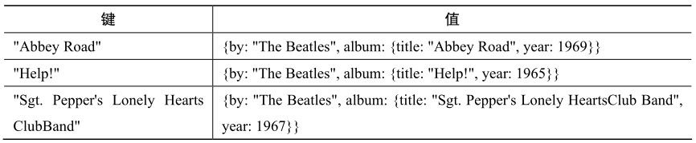
正如我们对 Artist By Name 视图做的操作，点击 Save As...按钮。这次对于 Design Document输入 albums，而对于View Name输入 by_name。点击Save按钮保存修改。现在来看看如何查询这些文档。
既然我们已经保存了两个自定义的“设计文档”，现在就该回到命令行，用curl命令查询它们。不妨从Artists By Name视图开始，执行如下命令：
$ curl http://localhost:5984/music/_design/artists/_view/by_name
{
"total_rows":1,
"offset":0,
"rows":[{
"id":"74c7a8d2a8548c8b97da748f43000ac4",
"key":"The Beatles",
"value":"74c7a8d2a8548c8b97da748f43000ac4"
}]
}
查询视图，需要构造这样的路径/<database_name>/_design/<design_ doc>/_ view/<view_ name>，替代相应的部分即可。在该实例中，在 music 数据库的artists“设计文档”中，查询by_name视图。意料之中，输出包含了一个文档，以乐队名为键。
下一步，试着查找Albums By Name视图：
$ curl http://localhost:5984/music/_design/albums/_view/by_name
{
"total_rows":3,
"offset":0,
"rows":[{
"id":"74c7a8d2a8548c8b97da748f43000ac4",
"key":"Abbey Road",
"value":{
"by":"The Beatles",
"album":{
"title":"Abbey Road",
"year":1969
}
}
},{
"id":"74c7a8d2a8548c8b97da748f43000ac4",
"key":"Help!",
"value":{
"by":"The Beatles",
"album":{
"title":"Help!",
"year":1965
}
}
},{
"id":"74c7a8d2a8548c8b97da748f43000ac4",
"key":"Sgt. Pepper's Lonely Hearts Club Band",
"value":{
"by":"The Beatles",
"album":{
"title":"Sgt. Pepper's Lonely Hearts Club Band",
"year":1967
}
}
}]
}
CouchDB会保证记录以所发布的键的字母顺序呈现。实质上，这就是CouchDB提供的索引。在设计视图时，选择发布什么键尤为重要，因为这会决定进行排序的依据。
以这种方式请求视图会返回整个数据聚合，但是，如果我们只想要一个子集呢？一种方法是使用URL参数key。指定key后，只有完全匹配的行才会返回。
$ curl 'http://localhost:5984/music/_design/albums/_view/by_name?key="Help!"'
{
"total_rows":3,
"offset":1,
"rows":[{
"id":"74c7a8d2a8548c8b97da748f43000ac4",
"key":"Help!",
"value":{
"by":"The Beatles",
"album":{"title":"Help!","year":1965}
}
}]
}
注意响应中的total_rows与offset域。total_rows域表示视图中记录的总数，不只是这个请求所返回的子集。offset 域则告诉我们，在全部记录中，第一条记录出现位置。基于这两个数字，以及rows的长度，我们能够计算在视图中在该位置前后还有多少记录。
请求视图可以分为基于key参数的若干种方式，但要在实际操作中演示，我们需要更多数据。
不管使用什么数据库，导入数据总是无法回避的问题。CouchDB也不例外。本节会用Ruby将结构化数据导入music数据库。通过这个实例，你会看到如何在CouchDB中实施大规模的数据导入，同时，我们也将得到一个很棒的数据池，供我们建立进阶视图时使用。
我们使用取自 Jamendo.com（一个专门提供免费授权音乐的网站1）的音乐数据。Jamendo以结构化XML的形式提供所有的艺术家、专辑以及曲目的数据，这对于CouchDB这样的面向文档的数据库来说，再理想不过了。
注释1 http://www.jamendo.com/
翻到Jamendo的NewDatabaseDumps页面2，下载文件dbdump_artistalbumtrack. xml.gz3，这个压缩文件只有15MB。解析Jamendo的XML文件，需要用到libxml-ruby gem。
注释2 http://developer .jamendo.com/en/wiki/NewDatabaseDumps
注释3 http://img.jamendo.com/data/dbdump_artistalbumtrack.xml.gz
不必编写我们自己的Ruby-CouchDB驱动程序，也不必直接发送HTTP请求，我们使用的是一个颇为流行的名为 couchrest的 Ruby gem，它将这些调用转化成方便使用的Ruby API。我们只会使用API中的某些方法，但是如果你想继续在项目中使用这个驱动程序，相关文档十分详细1。
注释1 http://rdoc.info/github/couchrest/couchrest/master/
在命令行中，安装必要的gem：
$ gem install libxml-ruby couchrest
就像我们在第4章中对数据所做的一样，我们使用一个SAX风格的解析器来处理文档，当数据从标准输入进来的时候，按顺序插入。代码如下：
couchdb/import_from_jamendo.rb
① require 'rubygems'
require 'libxml'
require 'couchrest'
include LibXML
② class JamendoCallbacks
include XML::SaxParser::Callbacks
③ def initialize()
@db = CouchRest.database!("http://localhost:5984/music")
@count = 0
@max = 100 # maximum number to insert
@stack = []
@artist = nil
@album = nil
@track = nil
@tag = nil
@buffer = nil
end
④ def on_start_element(element,attributes)
case element
when 'artist'
@artist = { :albums => [] }
@stack.push @artist
when 'album'
@album = { :tracks => [] }
@artist[:albums].push @album
@stack.push @album
when 'track'
@track = { :tags => [] }
@album[:tracks].push @track
@stack.push @track
when 'tag'
@tag = {}
@track[:tags].push @tag
@stack.push @tag
when 'Artists', 'Albums', 'Tracks', 'Tags'
# ignore
else
@buffer = []
end
end
⑤ def on_characters(chars)
@buffer << chars unless @buffer.nil?
end
⑥ def on_end_element(element)
case element
when 'artist'
@stack.pop
@artist['_id'] = @artist['id'] # reuse Jamendo's artist id for doc _id
@artist[:random] = rand
@db.save_doc(@artist, false, true)
@count += 1
if !@max.nil? && @count >= @max
on_end_document
end
if @count % 500 == 0
puts " #{@count} records inserted"
end
when 'album', 'track', 'tag'
top = @stack.pop
top[:random] = rand
when 'Artists', 'Albums', 'Tracks', 'Tags'
# ignore
else
if @stack[-1] && @buffer
@stack[-1][element] = @buffer.join.force_encoding('utf-8')
@buffer = nil
end
end
end
def on_end_document()
puts "TOTAL: #{@count} records inserted"
exit(1)
end
end
⑦ parser = XML::SaxParser.io(ARGF)
parser.callbacks = JamendoCallbacks.new
parser.parse
① 作为开始，引入rubygems模块以及需要的某些gems。
② 使用 LibXML 的标准方式是定义回调（callback）类。这里定义一个 JamendoCall backs类，为不同的事件（events）封装SAX处理程序。
③ 初始化阶段，要做的第一件事情是用CouchRest API连接本地的CouchDB服务器，然后创建music数据库（如果原本不存在music数据库）。之后，设置一些实例变量，以便在解析时存储状态信息。注意，如果把参数@max设置为nil，那么所有文档都会导入，而不是前100个文档。
④ 一旦开始解析，on_start_element()方法会处理任何开始标签。这里，我们会看到某些非常有趣的标签，比如<artist>、<album>、<track>以及<tag>。特别地，我们会忽略某些容器元素——<Artists>、<Albums>、<T racks>与<T ags>——而对于其他元素，我们会将它们作为在最近的容器项上设置的属性。
⑤ 解析器无论何时碰到字符数据，都会将它们存到缓冲区中，以便作为属性加到当前的容器元素中（@stack的末尾）。
⑥ 在on_end_element()方法中，有许多有趣的东西。这里，通过将当前容器元素弹出栈，来将它关闭。如果标签变量关闭了<artist>元素，就能用方法@db.save_doc()将文档存入CouchDB了。对任何容器元素，也会增加一个随机属性，其中包含新生成的随机数。我们会在稍后随机选择曲、专辑和艺术家时用到它。
⑦ Ruby的ARGF流会结合标准输入与任何在命令行中指定的文件。我们将ARGF流定向到LibXML，并指定JamendoCallbacks类的实例，处理这些标记——开始标记、结束标记以及字符数据。
把解压后的XML管道连接到这个导入脚本，就可以运行脚本了。
$ zcat dbdump_artistalbumtrack.xml.gz | ruby import_from_jamendo.rb
TOTAL: 100 records inserted
当输入完毕，回到命令行，我们可以看到新的视图。首先，查询一些艺术家。URL参数limit规定了我们希望返回的文档数目。
$ curl http://localhost:5984/music/_design/artists/_view/by_name?limit=5
{"total_rows":100,"offset":0,"rows":[
{"id":"370255","key":"\"\"ATTIC\"\"","value":"370255"},
{"id":"353262","key":"10centSunday","value":"353262"},
{"id":"367150","key":"abdielyromero","value":"367150"},
{"id":"276","key":"AdHoc","value":"276"},
{"id":"364713","key":"Adversus","value":"364713"}
]}
上个请求查询了 artists 列表中很靠前的文档。要跳到列表中间的位置，可以使用startkey参数：
$ curl http://localhost:5984/music/_design/artists/_view/by_name?\
limit=5\&startkey=%22C%22
{"total_rows":100,"offset":16,"rows":[
{"id":"340296","key":"CalexB","value":"340296"},
{"id":"353888","key":"carsten may","value":"353888"},
{"id":"272","key":"Chroma","value":"272"},
{"id":"351138","key":"Compartir D\u00f3na Gustet","value":"351138"},
{"id":"364714","key":"Daringer","value":"364714"}
]}
上面这条命令，从首字母为C的艺术家开始。而指定endkey参数，则提供了另一种限制返回内容的方式。这里限定只查询首字母在C～D之间的艺术家。
$ curl http://localhost:5984/music/_design/artists/_view/by_name?\
startkey=%22C%22\&endkey=%22D%22
{"total_rows":100,"offset":16,"rows":[
{"id":"340296","key":"CalexB","value":"340296"},
{"id":"353888","key":"carsten may","value":"353888"},
{"id":"272","key":"Chroma","value":"272"},
{"id":"351138","key":"Compartir D\u00f3na Gustet","value":"351138"}
]}
要获取反序的记录，可以使用 URL 参数 descending。当然，记得交换参数startkey与endkey。
$ curl http://localhost:5984/music/_design/artists/_view/by_name?\
startkey=%22D%22\&endkey=%22C%22\&descending=true
{"total_rows":100,"offset":16,"rows":[
{"id":"351138","key":"Compartir D\u00f3na Gustet","value":"351138"},
{"id":"272","key":"Chroma","value":"272"},
{"id":"353888","key":"carsten may","value":"353888"},
{"id":"340296","key":"CalexB","value":"340296"}
]}
还有很多其他的URL参数，可用于修改视图请求；这里介绍的是最常见也最常用的一些。URL参数中，有些必须与分组（grouping）一起使用，而这出自CouchDB映射规约视图的规约部分。我们将在明天探索这部分内容。
今天介绍了一些有意思的话题。我们学习了如何在CouchDB中创建基本视图，并保存到“设计文档”，还探索了查询视图的多种方式，以获得某些经过索引的数据。而通过使用Ruby与名为couchrest的流行gem，我们成功导入了结构化数据，并用这些数据支撑了我们之后创建的视图。展望明天，我们会创建更高级的视图，扩展已有的这些知识点，而方式则是引入规约器（reducer）并使用其他CouchDB支持的API。
求索
1．我们知道emit()方法能够输出字符串类型的键。其他数据类型，是否支持呢？你若发布一个作为键的数组，又会如何？
2．寻找一组可用于请求视图的URL参数（就像limit与startkey），并了解其用途。
实践
1．导入脚本import_from_jamendo.rb会为每个artist增加一个random属性，以分配随机数。创建映射函数会发布键-值对，其中键就是随机数，值则是 band 的名字。根据以上描述，新建视图artist并保存到名为_design/random的“设计文档”。
6.4 第3天：进阶视图、Changes API以及复制数据
在第1～2天，我们学习了如何执行基本的CRUD操作，以及与视图交互查找数据。基于这些经验，今天我们会更深入了解视图，解析映射规约架构的规约部分。之后，我们会用 JavaScript编写一些Node.js应用，以运用CouchDB独特的Changes API。最后，我们将讨论复制数据，以及CouchDB是如何处理数据冲突的。
基于映射规约的视图为我们提供了方法，让我们能够驾驭索引以及聚合工具（aggregation facility）。在第 2天，所有的视图都只包含映射器（mapper）。现在，加入规约器（reducer），对前一天导入的Jamendo数据，开发新的功能。
Jamendo 数据的一大优点是其可供挖掘的深度。艺术家有专辑，专辑有曲目。曲目，又有包括标签在内的属性。我们会将注意力转移到标签，看看能否编写一个收集标签并计数的深入化的视图。
首先，回到Temporary View页面，然后输入如下的map函数：
couchdb/tags_by_name_mapper.js
function(doc) {
(doc.albums || []).forEach(function(album){
(album.tracks || []).forEach(function(track){
(track.tags || []).forEach(function(tag){
emit(tag.idstr, 1);
});
});
});
}
该函数挖掘了artist文档，深入到每张专辑，每首曲目，最后触及每个标签。而对每个标签，它发布了键-值对；其中，键为标签的 idstr 属性（标签的字符串形式的表示，如“rock”），值为数值1。
有了map函数，在Reduce Function中输入如下代码：
couchdb/simple_count_reducer.js
function(key, values, rereduce) {
return sum(values);
}
这段代码的作用仅仅是计算值列表中数字的总和——运行视图后，马上会讨论这个话题。最后，点击Run按钮。输出应该如下所示：
续表
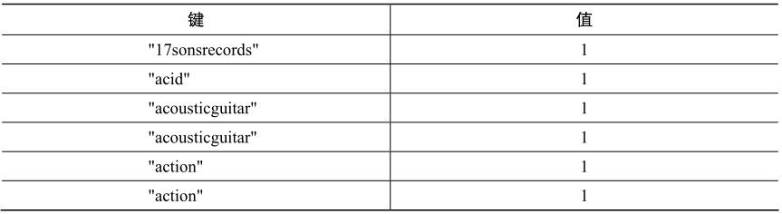
运行结果在意料之中。正如我们在mapper函数中所见，值总是1；而键则重复出现若干次，其次数与该标签用于曲目的数目一致。
注意了，输出表右上角有个Reduce复选框。选中它，再看看输出表。现在，它应该看起来如下所示：
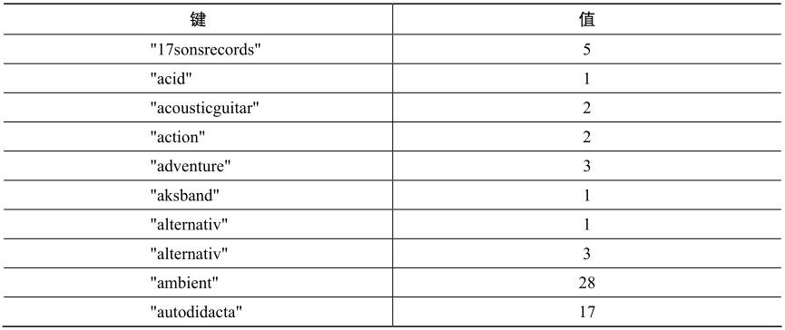
这是怎么回事？简而言之，规约器通过合并将输出规约了，比如，依据Reducer Function合并映射行。从概念上来看，CouchDB映射规约引擎与我们之前所见的其他映射规约器无异（见3.3.2节和5.3.4节（以及Finalize））。这里，我们特别从较高层次概括了CouchDB建立一个视图所采取步骤如下：
（1）将文档发送给映射函数；
（2）收集所有发布的值；
（3）根据键，将发布的行排序；
（4）将键相同的各行发送给规约函数；
（5）如果试图在一次调用中完成全部规约，数据可能会多到无法处理；这时，可以再次调用规约函数，当然，该次调用处理的是上次规约的结果；
（6）重复递归调用规约函数，直到没有重复的键。
CouchDB中的规约函数有三个参数：key、values以及rereduce。第一个参数， （key），是以元组（tuple）为元素的数组——元组包含：映射器发布的键，以及生成这个键的文档的_id。第二个参数（values），是由值所组成的数组，这些值对应于第一个参数中的键。
第三个参数，（rereduce），是一个布尔值。如果该次调用是规约的规约，则该值为true。也就是说，除了接收映射器发布的键与值，还接收上次规约器调用生成的结果。在这种情况下，参数key会是null。
让我们看一个实例，该例子基于我们刚才看到的输出。考虑文档（artists），其中包含了标记为“ambient”的 tracks。映射器作用于这些文档，并发布键-值对，形如“ambient”/1。
某些时候，映射器发布了足够多的键值对，于是CouchDB调用规约器，如下所示：
reduce(
[["ambient",id1],["ambient",id2],...], //key都相同
[1,1,...], //value都是1
false //rereduce是false,即非规约的规约
)
记得吗？在规约函数中，计算了值的总和——sum()。因为所有值都是 1，所以这里的总和，实际是标记为“ambient”的曲目的总数。CouchDB会保存该返回值，供进一步处理。对于这例子，把这个总数计为10。
稍后，等待CouchDB执行这些调用若干次，就会通过一个规约的规约，合并中间规约器结果：
reduce(
null, //key数组为null
[10,10,8], //value为之前规约器调用的输出
true //rereduce为true
)
规约函数再次对values调用sum()。这次，values的和为28。规约器调用可以是递归的。只要有规约没有完成，就会一直继续下去，直到所有的中间结果都合并成一个值。
大多数映射规约系统，包括其他数据库（如本书讨论过的Riak与MongoDB）所使用的，都会在工作结束后丢弃映射规约的输出。在那些系统中，把映射规约视为获取结果的手段——每当有需求时，就要执行，每次都要从头开始。而CouchDB并非如此。
一旦视图编码为“设计文档”，CouchDB 就会保存映射器与规约器的中间值，直到文档发生变化，中间数据不再有效。这时，CouchDB会增量地运行映射器与规约器，为更新的数据更正映射规约的中间结果。于是，CouchDB不会每次从头开始，重复每项计算。这是CouchDB的“天赋”。CouchDB不会丢弃中间数据值，因此，能够以映射规约作为主要的索引机制。
CouchDB的增量式映射规约无疑是一个创新的特性；这是CouchDB区别于其他数据库的特性之一。我们将探索的下一特性是Changes API。这个接口提供了监控数据库变化并立刻更新的机制。
Changes API使CouchDB成为记录系统的完美候选。设想有一个多数据库系统，数据从各处流入，而其他系统需要时时保持更新（事实上，我们会在8.4节讨论相关内容）。相关例子会包含搜索引擎，由如下技术或者项目支持：Lucene、ElasticSeach、实现于memcached之上的缓存层，或者Redis。同样，你也可能要运行不同的维护脚本，以应对数据变化——执行诸如数据库压缩或者远程备份的任务。简而言之，这个简单的API带来了无穷的可能性。今天，我们就来学习如何利用它。
为使用这个 API，我们将用 Node.js 开发一些简单的客户端应用。Node.js1是基于 V8 JavaScript引擎的服务器端JavaScript平台——Google的Chrome浏览器使用的就是V8。由于Node.js是事件驱动的，且与之协同工作的代码是JavaScript编写的，因此，十分适合与CouchDB整合。如果你还没有Node.js，浏览Node.js的网站，安装其稳定版（我们使用的是0.6版）。
注释1 http://nodejs.org/
Changes API有三种：轮询（polling）、长轮询（long-polling）以及连续（continuous）。我们会依次讨论每一项。与往常一样，我们会先使用 cURL 小试身手，然后再采用编程方式。
1．用于变更的cURL
访问Changes API的最简单方法是利用轮询接口。打开命令行，尝试如下命令（为简单起见，这里展示的是输出片段；所以可能与你得到的输出所有不同）：
$ curl http://localhost:5984/music/_changes
{
"results":[{
"seq":1,
"id":"370255",
"changes":[{"rev":"1-a7b7cc38d4130f0a5f3eae5d2c963d85"}]
},{
"seq":2,
"id":"370254",
"changes":[{"rev":"1-2c7e0deec3ffca959ba0169b0e8bfcef"}]
},{
... 97 more records ...
},{
"seq":100,
"id":"357995",
"changes":[{"rev":"1-aa649aa53f2858cb609684320c235aee"}]
}],
"last_seq":100
}
当向_changes发送GET请求，而不带任何参数时，CouchDB会返回它所能提供的全部。正如访问视图，可以指定参数 limit ，以请求数据的子集，而添加参数include_docs=true会使响应包含完整的文档。
通常，你并不想获取从最初算起的所有变化。你往往更希望得到自上次检查后所发生的变化。为此，需要使用since参数。
$ curl http://localhost:5984/music/_changes?since=99
{
"results":[{
"seq":100,
"id":"357995",
"changes":[{"rev":"1-aa649aa53f2858cb609684320c235aee"}]
}],
"last_seq":100
}
如果指定的since参数值大于最后的序号，就会得到一个空的响应：
$ curl http://localhost:5984/music/_changes?since=9000
{
"results":[
],
"last_seq":9000
}
使用这个方法，客户端应用会定期检查，以发现是否发生新的变化，然后根据不同的应用，采取不同的行为。
如果你跟踪数据的更新，又能够容忍一定的延迟，那么轮询是不错的方案。如果数据更新相对较少，尤其适合轮询。比如，如果你要获取博客文章，每五分钟轮询一次就可以了。
如果你想快些更新，又没有重新打开连接的开销，那么长轮询是更好的选择。当指定 URL 参数 feed=longpoll时，CouchDB 会保持连接一段时间，等待更新，然后完成响应。试试下面的命令：
$ curl 'http://localhost:5984/music/_changes?feed=longpoll&since=9000'
{"results":[
你应该只能看到JSON响应的开始部分。如果终端打开足够长时间，CouchDB最终会关闭连接，以此作为结束：
],
"last_seq":9000}
从开发角度看，编写驱动程序，使用轮询监控CouchDB变更，等效于长轮询。本质的区别只是CouchDB会保留连接处于打开状态多久。现在，不妨将注意力放到编写Node.js应用上，以监控并利用数据变化订阅内容。
2．用Node.js轮询变化
因为 Node.js 是强大的事件驱动系统，所以 CouchDB 监控亦会坚持这个原则。无论CouchDB何时报告文档变化，驱动程序都会监控订阅与发布的变化事件。首先，我们会概览这个驱动程序的构架，谈论它的主要部件，然后填入订阅的具体细节。
事不宜迟，以下就是监控程序的框架，以及关于其功能的简单讨论：
couchdb/watch_changes_skeleton.js
var
http = require('http'),
events = require('events');
/**
* create a CouchDB watcher based on connection criteria;
* follows node.js EventEmitter pattern, emits 'change' events.
*/
① exports.createWatcher = function(options) {
② var watcher = new events.EventEmitter();
watcher.host = options.host || 'localhost';
watcher.port = options.port || 5984;
watcher.last_seq = options.last_seq || 0
watcher.db = options.db || '_users';
③ watcher.start = function(){
// ...特定于订阅内容的实现
};
return watcher;
};
//作为主脚本运行,开始监控CouchDB的变化
④ if (!module.parent){
exports.createWatcher({
db: process.argv[2],
last_seq: process.argv[3]
})
.on('change', console.log)
.on('error', console.error)
.start();
}
① exports 是由 CommonJS Module API（实现了 Node.js）提供的标准对象。为exports增加createWatcher()方法，使它能够用于其他Node.js脚本（这些脚本想把exports作为类库使用）。options参数允许调用者指定希望监控的数据库以及覆盖其他的连接设置。
② createWatcher()方法生成EventEmitter对象，调用者可以用这个对象来监听变化事件。EventEmitter的这些能力包括，调用on()方法可以监听事件，调用emit()方法可以触发事件。
③ watcher.start()负责发送HTTP请求，以监控CouchDB的变化。当文档发生变化时，监控器会发布相应的变化事件。所有特定于订阅内容的实现都在这个方法内。
④ 最后一段代码定义了，如果该脚本直接从命令行调用，会做些什么。在这个例子中，脚本会调用createWatcher()方法，然后在返回的对象上设置监听者（监听什么，之后做什么），并把结果置于标准输出。在命令行中，可以设置连接哪个数据库，从哪个序号ID开始。
到目前为止，这些代码中没有特定于CouchDB的内容，都只是Node.js的实现方式。你可能对这些代码感到陌生，尤其是你之前从未开发过事件驱动的服务器技术，然而，随着本书的进度，我们会越来越多地使用这项技术。
有了实现架构之后，不妨加入代码，通过长轮询与发布事件的方式，连接到CouthDB。下面就是watcher.start()方法内的代码。参考前面的代码结构，所完成的新文件名为watch_changes_longpolling.js。
couchdb/watch_changes_longpolling_impl.js
var
① http_options = {
host: watcher.host,
port: watcher.port,
path:
'/' + watcher.db + '/_changes' +
'?feed=longpoll&include_docs=true&since=' + watcher.last_seq
};
② http.get(http_options,function(res) {
var buffer = '';
res.on('data', function (chunk) {
buffer += chunk;
});
res.on('end', function() {
③ var output = JSON.parse(buffer);
if (output.results) {
watcher.last_seq = output.last_seq;
output.results.forEach(function(change){
watcher.emit('change', change);
});
watcher.start();
} else {
watcher.emit('error', output);
}
})
})
.on('error', function(err) {
watcher.emit('error', err);
});
① 这个脚本所做的第一件事情就是在请求中设置 http_options 配置对象。path则指向我们用过的相同 _changes URL，而feed设 置为longpoll，include_docs=true。
② 此后，脚本会调用http.get()——Node.js的库方法，它会依据设置发送一个GET请求。该方法的第二个参数是一个回调方法，它的功能是收到一个HTTPResponse。响应对象会发布data事件，作为传回的内容，即会加到buffer中。
③ 最后，当响应对象发布end事件，会解析缓冲区（其中包含JSON）。由此，得到新的last_seq值，发布一个change事件，然后再次调用watcher.start()，等待下一次数据变化。
在命令行模式运行这个脚本，如下所示（简洁起见，截取了输出的片段）：
$ node watch_changes_longpolling.js music
{ seq: 1,
id: '370255',
changes: [ { rev: '1-a7b7cc38d4130f0a5f3eae5d2c963d85' } ],
doc:
{ _id: '370255',
_rev: '1-a7b7cc38d4130f0a5f3eae5d2c963d85',
albums: [ [Object] ],
id: '370255',
name: '""ATTIC""',
url: 'http://www.jamendo.com/artist/ATTIC_(3)',
mbgid: '',
random: 0.4121620435325435 } }
{ seq: 2,
id: '370254',
changes: [ { rev: '1-2c7e0deec3ffca959ba0169b0e8bfcef' } ],
doc:
{ _id: '370254',
_rev: '1-2c7e0deec3ffca959ba0169b0e8bfcef',
... 98 more entries ...
应用运行良好！为每个文档输出一条记录后，进程会继续运行，轮询CouchDB之后的变化。
可以随时在Futon里直接修改文档，或者在import_from_jamendo.rb上增加@max值，并再次运行。你会看到在命令行中看到相应的变化。接下来会讨论如何开足马力，使用连续的事件通知，以实现更快的更新。
_changes 服务提供的轮询与长轮询订阅都会产生正确的 JSON 作为结果。而连续的订阅有所不同——单独发送每个变化并保持连接处于打开状态，而非把所有可用的变化合并到一个 results 数组且随后关闭连接。在这种方式下，一旦发生变化，可以立刻返回更多JSON序列化的变化通知对象。
要想知道其工作原理，试试下面的命令（为了便于阅读，输出删减了）：
$ curl 'http://localhost:5984/music/_changes?since=97&feed=continuous'
{"seq":98,"id":"357999","changes":[{"rev":"1-0329f5c885...87b39beab0"}]}
{"seq":99,"id":"357998","changes":[{"rev":"1-79c3fd2fe6...1e45e4e35f"}]}
{"seq":100,"id":"357995","changes":[{"rev":"1-aa649aa53f...320c235aee"}]}
最后，如果一段时间内没有变化，CouchDB会输下如下一行内容，然后关闭连接，
{"last_seq":100}
这种方式优于轮询与长轮询的地方在于，减少了开销，还让连接保持打开状态。于是，不会损失重建HTTP连接的时间。另一方面，输出不是单纯的JSON，也就是说，解析要麻烦些。同理，如果客户端是 Web 浏览器，就会有问题。浏览器会异步地下载订阅，这会导致无法获取任何有效数据，直到整个连接完毕（这种情况下，使用长轮询更好）。
过滤变化
正如我们所见，Changes API提供了一个独特的方式，让我们能够参与CouchDB数据库正在发生的事情。从好的方面看，它在单个数据流中提供了所有的变化。然而，有时你只想要变化的某个子集，而不是所发生的全部变化。比如，你可能只对文档删除感兴趣，或许，只关注某些特别的文档。这时，过滤器就起作用了。
过滤器有这样的功能，以某个文档（或者请求信息）作为输入，然后决定该文档是否应该通过过滤器。通过与否，都反映在返回值中。我们来看看这究竟是如何运作的。以music数据库为例，插入的大多数artist文档都有country属性，该属性包含一个三字母的编码。假设我们只对来自 Russia（RUS）的乐队感兴趣。过滤器看起来会像下面这样：
function(doc) {
return doc.country === "RUS";
}
如果将这个函数加入“设计文档”的filters参数中，就能在发布_changes请求的时候使用该函数。但是，在这么做之前，把例子做一番扩展。相比总想要Russian乐队，更好的做法是将其参数化，这样country就能在URL里指定了。
这就是参数化country属性的过滤器函数：
function(doc, req) {
return doc.country === req.query.country;
}
注意，如何比较文档的 country 属性与作为请求的查询串传入的同名属性。要看一个实例，可以只为基于地理位置的过滤器，新建一个“设计文档”并添加它：
$ curl -X PUT \
http://localhost:5984/music/_design/wherabouts \
-H "Content-Type: application/json" \
-d '{"language":"javascript","filters":{"by_country":
"function(doc,req){return doc.country === req.query.country;}"
}}'
{
"ok":true,
"id":"_design/wherabouts",
"rev":"1-c08b557d676ab861957eaeb85b628d74"
}
现在，可以发送一个过滤country变化的请求了：
$ curl "http://localhost:5984/music/_changes?\
filter=wherabouts/by_country&\
country=RUS"
{"results":[
{"seq":10,"id":"5987","changes":[{"rev":"1-2221be...a3b254"}]},
{"seq":57,"id":"349359","changes":[{"rev":"1-548bde...888a83"}]},
{"seq":73,"id":"364718","changes":[{"rev":"1-158d2e...5a7219"}]},
...
有了过滤器，你就能设置一种伪分片机制，其中，只有一部分记录在节点之间复制。尽管这不是像MongoDB或者HBase那样的真正分片系统，但它确实将处理某些请求的职责分离。比如，主CouchDB服务器可能有几个独立的过滤器，分别用于用户、订单、消息与库存。单独的CouchDB服务器能够基于这些过滤器复制变化，每个服务器支持业务的不同方面。
因为过滤器函数可以包含任意JavaScript，所以可以纳入更复杂的逻辑。测试深层嵌套的域，与我们在创建视图时所做的类似。也能使用正则表达式测试属性或者进行数学比较（比如，根据日期范围过滤）。在请求对象中，甚至有 user context属性（req.userCtx），能用它在请求中找到类似用户名、密码这样的信息。
第 8章再次讨论Node.js与CouchDB的Changes API。而现在，我们会继续下去，讨论CouchDB最后一个出色特性：复制。
CouchDB是一个关于异步环境与数据持久性的数据库。按照CouchDB，存储数据最安全的地方无所不在，而CouchDB确实提供了这样的工具。我们看过的一些其他数据库，维护单个主节点以保证一致性。其他的某些数据库，则通过多数决议节点保证一致性。CouchDB与两者都不同；它支持某种称为多主节点或者主—主的复制方式。
每个 CouchDB 服务器具有一样的能力，接收更新、响应请求以及删除数据，而这与它能否连接到其他服务器无关。在这种模型中，数据变化选择性地在一个方向上复制，所有的数据都以同一种方式复制。换句话说，没有分片。参与复制的服务器都将有全部数据。
复制是CouchDB中最后一个讨论的重要主题。首先会讨论如何在数据库间配置临时与连续的复制。然后，会解决数据冲突的影响，学习如何使应用程序以优雅的方式处理这些案例。
作为开始，点击页面右侧 Tools 菜单中的 Replicator 链接，这会打开一个如图 6-6所示的页面。在Replicate changes from对话框，从左边的下拉菜单中选择music，在右边输入music-repl。取消勾选Continuous复选框，然后点击Replicate按钮。当出现提示时，点击 OK按钮创建 music-repl数据库。这应该在窗体下面的事件日志中生成一条事件消息。
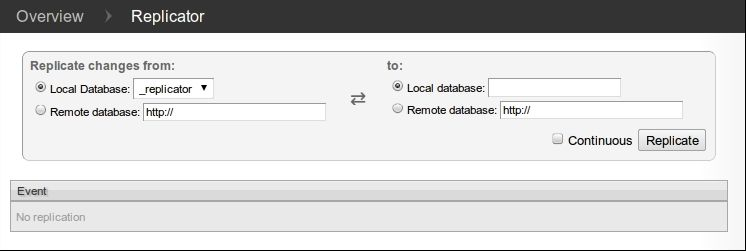
图6-6 CouchDB Futon: Replicator
CouchDB还是BigCouch
CouchDB的方式在许多用例中是合理且有效的，这无疑填补了我们讨论过的其他数据库所不能解决的缺口。另一方面，在节点之间选择性地复制数据是很棒的，这可以充分利用磁盘空间。也就是说，不是每个节点都包含全部数据，仅保存一定数量的副本。还记得3.3.4节讨论过的节点/写操作/读操作话题吗？这里的副本数，就是当时话题中NWR的N。
CouchDB不提供这样的特性，不过别担心！BigCouch有这样的功能。Cloudant开发并维护的BigCouch，提供了兼容CouchDB的接口（仅有一些小的差别a）。但在接口之下，BigCouch实现了分片与复制策略，类似于Riak这样的Dynamo-inspired数据库。安装BigCouch是一件挺繁琐的差事（比惬意的CouchDB难得多），但是，如果开发场景包含大型数据中心，这又是值得的。
注释a http://bigcouch.cloudant.com/api
为了确认复制请求生效了，回到 Futon Overview 页面。应该能看到一个名为music-repl的新数据库，其文档数目与music数据库相同。如果数目少了，等待些许时间并刷新页面——CouchDB可能正在复制中。如果Update Seq的值不匹配，不要担心。这是因为原本的music数据库有文档的删除与更新操作，而music-repl数据库只有插入操作，以快速建立数据库。
1．制造数据冲突
下一步，我们将制造数据冲突，然后探索解决冲突的办法。还是停留在 Replicator 页面上，因为我们打算在music与music-repl之间频繁地触发自由定义的复制。
回到命令行，输入以下内容，在music数据库里创建一个文档：
$ curl -X PUT "http://localhost:5984/music/theconflicts" \
-H "Content-Type: application/json" \
-d '{ "name": "The Conflicts" }'
{
"ok":true,
"id":"theconflicts",
"rev":"1-e007498c59e95d23912be35545049174"
}
在Replicator页面上，点击Replicate按钮触发又一次同步。设法从music-repl数据库中检索该文档，验证同步是否成功完成。
$ curl "http://localhost:5984/music-repl/theconflicts"
{
"_id":"theconflicts",
"_rev":"1-e007498c59e95d23912be35545049174",
"name":"The Conflicts"
}
然后，在music-repl中增加一张名为《Conflicts of Interest》的专辑，来更新该文档。
$ curl -X PUT "http://localhost:5984/music-repl/theconflicts" \
-H "Content-Type: application/json" \
-d '{
"_id": "theconflicts",
"_rev": "1-e007498c59e95d23912be35545049174",
"name": "The Conflicts",
"albums": ["Conflicts of Interest"]
}'
{
"ok":true,
"id":"theconflicts",
"rev":"2-0c969fbfa76eb7fcdf6412ef219fcac5"
}
为在music数据库中制造一次冲突更新，增加一张不同的专辑。
$ curl -X PUT "http://localhost:5984/music/theconflicts" \
-H "Content-Type: application/json" \
-d '{
"_id": "theconflicts",
"_rev": "1-e007498c59e95d23912be35545049174",
"name": "The Conflicts",
"albums": ["Conflicting Opinions"]
}'
{
"ok":true,
"id":"theconflicts",
"rev":"2-cab47bf4444a20d6a2d2204330fdce2a"
}
这时，music和music-repl都有相同的_id值theconflicts。两个文档都是版本2，且从一个基础版本（1-e007498c59e95d23912be35545049174）而来。现在的问题是，当我们试图复制二者时，会发生什么呢？
2．解决数据冲突
在两个数据库之间，现在有相互冲突的两个文档。回到 Replicator 页面，再执行一次复制。若你本以为复制会失败，很可能会震惊于操作竟然执行成功了。那么CouchDB究竟是如何处理数据差异的呢?
事实上，CouchDB只是简单地二选一，将胜出的那个作为获胜者。当然，使用了确定的算法，所有的CouchDB节点都会在检测到冲突时，挑出同一个胜者。不过，事情还不止这些。CouchDB也会存储未选中的“失败”文档，以便客户端应用能够在之后的某个时候回顾当时的情形，并解决问题。
要找出哪个版本的文档在最近的复制中“获胜”，可以用普通的GET请求获取该文档，通过增加URL参数conflicts=true，CouchDB也会将冲突的版本信息包含进来。
$ curl http://localhost:5984/music-repl/theconflicts?conflicts=true
{
"_id":"theconflicts",
"_rev":"2-cab47bf4444a20d6a2d2204330fdce2a",
"name":"The Conflicts",
"albums":["Conflicting Opinions"],
"_conflicts":[
"2-0c969fbfa76eb7fcdf6412ef219fcac5"
]
}
于是，我们看到第二次更新获胜了。注意响应中的_conflicts。它包含了与当前版本相冲突的其他版本列表。在GET请求中增加rev参数，可以获取到所有冲突的修订版本，并决定如何处置它们。
$ curl http://localhost:5984/music-repl/theconflicts?rev=2-0c969f...
{
"_id":"theconflicts",
"_rev":"2-0c969fbfa76eb7fcdf6412ef219fcac5",
"name":"The Conflicts",
"albums":["Conflicts of Interest"]
}
这里的启发在于CouchDB没有设法智能地合并冲突的数据变化。至于如何合并冲突的文档，这与特定应用相关，很难找到一个普遍适用的解决方案。在我们的例子中，通过连接两个albums数组的方法实现合并是有意义的，但你很容易会想到在一些情况下，合适的操作并非显而易见。
举例来说，假设你正在维护一个关于日历事件的数据库。你的智能手机上有一个副本；笔记本电脑上有另一个副本。现在，你收到派对策划者发来的一条短消息说，你委托举办派对的地点确定了。于是，你更新了智能手机上的日历数据库。稍后，回到办公室，你收到派对策划者发来的一封邮件，其中提到另一个派对地点，所以，你更新笔记本上的数据库，然后同步智能手机与笔记本上的数据库。CouchDB无法知道哪个派对地点是正确的。此时，最好的做法是保持一致，保存旧值，以便你能够核查究竟哪个冲突值应该保留。由应用程序选择合适的用户接口，处理这种情况，并征求一个决策——不失为一种好的方式。
我们的CouchDB之旅到此结束了。在第3天里，我们学习了如何为映射规约产生的视图增加规约函数。然后，我们深入了解了Changes API，包括如何开发基于Node.js的事件驱动的服务器端JavaScript。最后，我们了解了CouchDB是如何实现主-主复制策略的，以及客户端应用是怎样侦测并解决冲突的。
第3天作业
求索
1．CouchDB中有什么可用的原生规约器吗？如果有的话，相比使用定制的JavaScript规约器，又有什么好处？
2．在服务器端，如何过滤出自_changes API的数据变化呢？
3．与CouchDB中的所有任务一样，初始化与取消复制的任务实际也是由HTTP命令控制的。在服务器之间设置与移除复制关系的REST命令又是什么？
4．如何使用_replicator数据库，保存复制关系？
实践
1 ．在 Node.js 模块（ 6.4.3 节讨论过）的基础上，创建名为 watch_changes_continuous.js的新模块。
2．实现watcher.start()，使其以连续的方式监控_changes订阅内容。确认它与watch_changes_longpolling.js产生相同的输出。
提示：如果你遇到问题，可以下载本书的示例实现，作为参考。
3．带有冲突版本的文档有一个_conflicts属性。创建一个视图，发布冲突的版本，并将它们映射到doc_id。
通过本章的学习，我们见识了如何执行与CouchDB相关的很多任务，从基本的CRUD操作，到利用映射规约函数创建视图。我们学习了如何监视数据变化，还尝试开发了非阻塞的事件驱动客户端应用。最后，我们讨论了如何在数据库之间执行自由定义的复制，以及侦测并解决冲突。除了所有这些，其实还有很多我们没有接触的内容。不过，在开始讨论下一种数据库之前，总结一下所学是必要的。
CouchDB是NoSQL社区中，健壮且稳定的一员。网络是不可靠的，而硬件故障总是迫在眉睫——CouchDB就是基于这种哲学建立的，于是，提供了一种尽可能分散的数据存储方式。小，小到可以运行在智能手机中；大，大到足以支持企业应用。CouchDB 能够胜任各种部署场景。
CouchDB是一个作为数据库的API。在本章中，我们关注 canonical Apache CouchDB项目，但事实上，有越来越多的可选实现，而CouchDB服务提供者则建立于混合的后端之上。因为CouchDB由Web起，为Web生，应用网络技术是相当自然的——比如负载均衡器与缓存层——当然，最终都是通过CouchDB的API可用的技术。
当然，CouchDB不是万能的。CouchDB中基于映射规约的视图，虽然新颖，但是不能执行关系数据库中的数据分片。事实上，在生产环境中，你不应该运行自由定义的查询。同样，CouchDB的复制策略不总是正确的选择。CouchDB的复制是全部或者全无，也就是说，所有参与复制的服务器有着一样内容。于是，在数据分布到数据中心的过程中，没有分片。增加CouchDB节点的主要理由，不是为了将数据四处分散，而是尽可能增加读写操作的吞吐量。
为处理不确定性 CouchDB，尤其关注健壮性；因此，如果你的系统必须运行于残酷的互联网环境中， CouchDB 会是很棒的选择。通过利用标准的 Web 方法，例如HTTP/REST与JSON，CouchDB总是能轻易适应流行的Web技术。在数据中心的围墙内，由CouchDB或BigCouch应对数据冲突，这都没有问题；但是不要奢望数据分片。
还有很多其他我们尚未提到的特性，使CouchDB成为独一无二的数据库。这些特性大致包括易于备份、文档支持二进制附件以及CouchApps——不通过中间件，直接开发并部署Web应用的系统。说了这么多，我们希望给了你足够的亮点，吊起你的胃口，自己继续学习下去。若要选择一个数据驱动的Web应用，不妨试试CouchDB；你不会失望的！